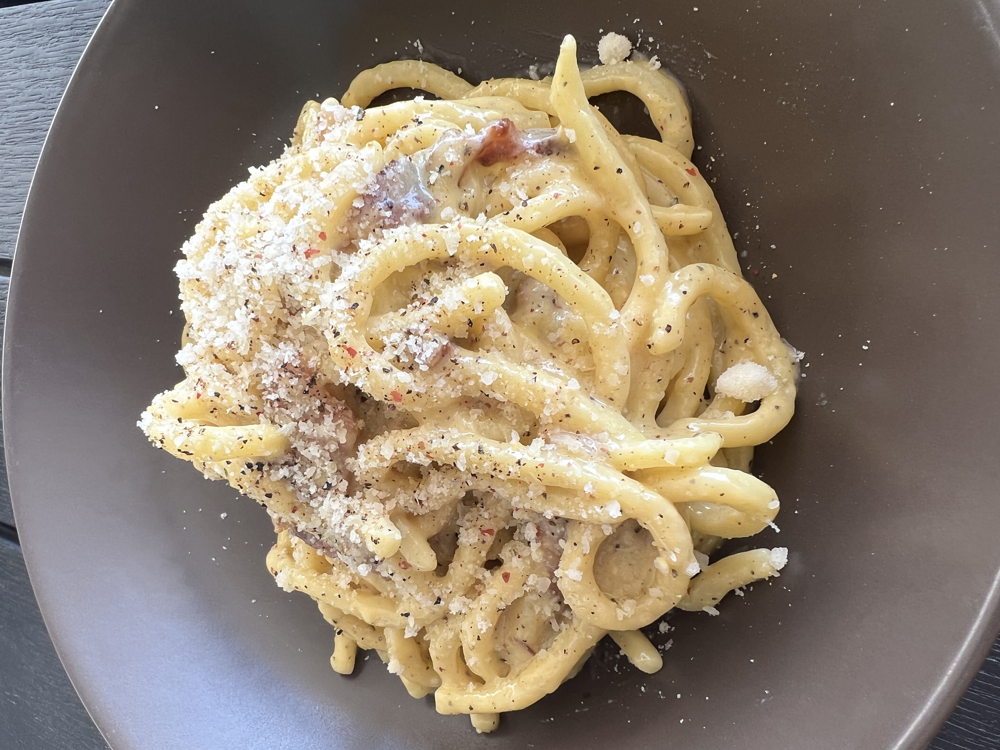

Carbonara

The Carbonara is a simple but Classic Italian dish
An Italian pasta dish from Rome, made with very few ingredients but of excellent quality. The high quality of ingredients is a necessary condition for the success of this recipe.
In spite of many beliefs, the ingredients of the traditional recipe are only 6: guanciale, pecorino romano, eggs, pepper, salt and your choice of pasta (I like to use Pici). To make the best Carbonara of your life, you don’t need any other ingredients.
Ingredients
- 4 Egg yolks
- 100g Guanciale
- 100g Pecorino Romano
- 300g Pasta
- Pepper
- Salt
Steps
- First, boil the water for the pasta while you prepare the Carbonara sauce. Remember: 1 liter (4 cups) of water for every 100g of pasta and 15g of coarse salt per liter of water.
- Cut the Guanciale into small pieces then cook in a pan over medium heat for about 2 to 3 minutes. Stir occasionally so that it cooks evenly. The more the Guanciale cooks, the more its fat will melt and its meat will become crispy. The level of cooking is up to you, depending on your taste. Some people like their Guanciale well cooked and others prefer it soft.
- Now prepare the paste. So, in a bowl put the Egg yolks and Pecorino Romano.
- Add some freshly ground pepper. Then, mix quickly with a fork, until you have a thick creamy paste.
- The water should now be boiling so add the salt and cook the pasta.
- Cook the pasta al dente, following the cooking time found on the pasta package.
- Once the pasta is cooked scoop out a cup of pasta water and drain the rest.
- Add the pasta to the pan that the Guanciale is cooiking in and stir togehter.
- Add the pasta water we saved ealier and stir (the pasta water is crucial to making the sauce creamy).
At this step, we have reached the crucial moment of Carbonara. Not to put tension on it, but this is the fleeting moment in which you can make a dish to remember or one that will be a failure. So now you have to be quick.
- Turn off the heat and add the paste we prepared and MIX!. Don't stop until the paste has mixed into the water and created a thick sauce.
- The Carbonara is ready to serve, time to plate up.
Add some freshly ground pepper and grated Pecorino Romano on top to finish off this classic dish.